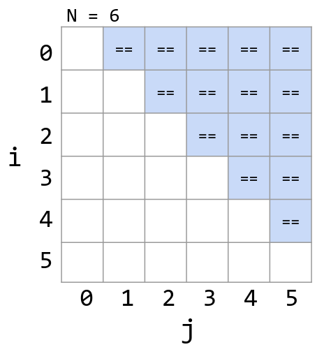
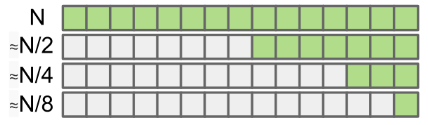

Asymptotics
Table of Contents
1. Asymptotic Analysis
In asymptotic analysis, what we wish to do is measure the efficiency of some piece of code. To do so, we need some way of characterizing the runtime of some program.
The problem with measuring runtime absolutely is that it often does not depend just on the code written, but also the inputs that are given to it as well as the computer that the code is running on. To solve these problems, asymptotic analysis doesn’t describe the efficiency of a program based on absolutely how long a program runs, but rather the change in runtime as \(N\) (the size of the input) gets large.
1.1. Order of Growth
We wish to find the order of growth for a program: as \(N\) grows, what happens to the runtime of the algorithm? To do so, we look at the operations being run in the algorithm, and we choose one as the cost model: use the count of that operation as the order of growth. This operation must be representative of the algorithm: we focus on behavior as \(N\) gets very large, which means any count that is small contributes negligibly overall.
For example, the following program has an order of growth of \(N^2\):
public static void countDuplicates(int[] a) {
int duplicates = 0;
for (int i = 0; i < a.length; i++) {
for (int j = i + 1; j < a.length; j++) {
if (a[i] == a[j]) {
duplicates += 1;
}
}
}
IO.println("Duplicates: " + duplicates);
}
We choose the == operation as the representative cost model. If we take a look at the amount of times this is run, we see that it is \(\frac{N^2}{2}\):

1.2. Big Theta Notation
Big-theta notation formalizes the order of growth. For example:
| Function | Order of Growth |
|---|---|
| \(N^3+3N^4\) | \(\Theta(N^4)\) |
| \(\frac{1}{N}+N^3\) | \(\Theta(N^3)\) |
| \(\frac{1}{N}+5\) | \(\Theta(1)\) |
| \(Ne^N+N\) | \(\Theta(Ne^N)\) |
| \(40\sin(N)+4N^2\) | \(\Theta(N^2)\) |
Formally, if \(R(N)\) is the function we care about, then \(R(N) \in \Theta(f(N))\) means that there exist positive constants \(k_1\) and \(k_2\) such that:
\begin{align} k_1f(N) \leq R(N) \leq k_2f(N) \end{align}For example, \(40\sin(N)+4N^2\in\Theta(N^2)\), and \(3N^2 \leq 40\sin(N)+4N^2\leq 5N^2\).
1.3. Big O Notation
Big-O notation is the upper bound of the order of growth. More formally, \(R(N) \in O(f(N))\) means that there exists a postive constant \(k\) such that:
\begin{align} R(N) \leq kf(N) \end{align}1.4. Big Omega Notation
Big-Omega notation is the lower bound on the order of growth. More formally, \(R(N) \in \Omega(f(N))\) means that there exists a positive constant \(k\) such that:
\begin{align} kf(N) \leq R(N) \end{align}2. Binary Search
Binary search is an algorithm to find a key in a sorted array. The idea is that at each step, you:
- Compare the key against the middle entry.
- If too small, go left.
- If too big, go right.
- If it is equal, you found the key.
Intuitively, we see that the asymptotic runtime grows by \(\log N\), as in the worst case the problem size halves over and over until it gets to 1:
